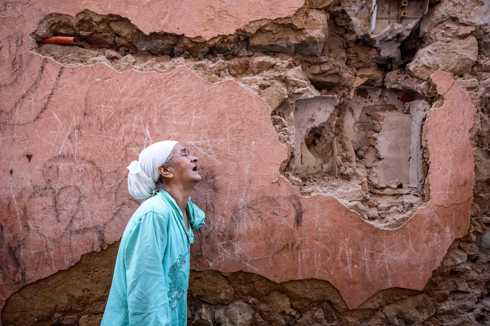

Top five news headlines of the week

- Earthquake in Morocco: Death Toll Jumps Above 1,000 From Strong Quake in Morocco -
The New York Times
- Councillor’s murder in Ecuador fuels crime concerns ahead of election -
Al Jazeera
- Vietnam Chases Secret Russian Arms Deal, Even as It Deepens U.S. Ties -
The New York Times
- Forced to join the Islamic State group as a teenager, she escaped – but now faces deportation from France -
Le Monde
- Idaho Created a $25 Million Fund to Fix Unsafe Schools. Why Is Nobody Using It? -
Pro Publica